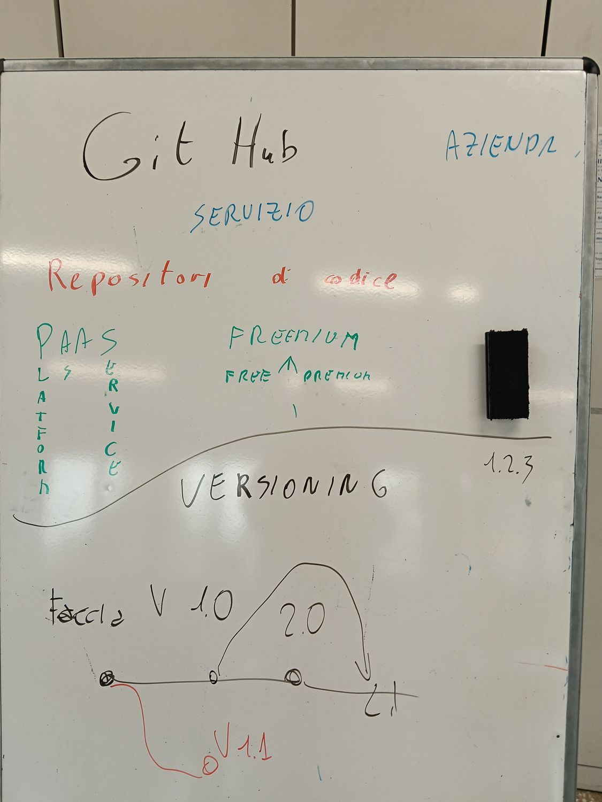

Ecco, ridisegnato in ordine, lo schema che abbiamo costruito insieme alla lavagna. Ogni riquadro è una tappa: nelle prossime pagine le apriamo una per una.

Alla lavagna abbiamo scritto due parole sopra "GitHub": azienda e servizio. Vediamo perché tutte e due sono vere.
Dietro GitHub c'è una società vera — GitHub, Inc., nata nel 2008 e dal 2018 di proprietà di Microsoft. Come ogni azienda deve mantenersi: ci arriviamo al punto "Freemium".
GitHub è un sito dove metti i tuoi progetti online: per tenerli al sicuro, mostrarli e lavorarci in gruppo. Non è un programma che installi col CD: lo usi dal browser.
Sulla lavagna, sotto "servizio", abbiamo scritto "repository di codice": è ciò che GitHub custodisce.
Un repository (in breve "repo") è la cartella-progetto con dentro i file e tutta la loro storia. Ogni salvataggio della storia si chiama commit (una "fotografia" del progetto con un messaggio). Se lavori in gruppo, puoi aprire un branch (una strada di lavoro parallela) e poi riunirlo con un merge.
Alla lavagna: PaaS = Platform as a Service, cioè "piattaforma come servizio". Vuol dire che qualcuno ti mette a disposizione online una piattaforma già pronta, e tu la usi senza costruirti e mantenere i computer, i server e tutto il resto.
PaaS non è da solo: fa parte di una famiglia di servizi online, tutti con la sigla che finisce in "aaS" (as a Service). Cambia quanto lavoro fai tu:
| Sigla | Nome | Cosa ti danno pronto | Esempio |
|---|---|---|---|
| IaaS | Infrastructure as a Service | Solo i "muri e la corrente": server nudi. | Amazon AWS, Google Cloud |
| PaaS | Platform as a Service | La cucina già attrezzata: piattaforma pronta. | GitHub, Netlify |
| SaaS | Software as a Service | Il piatto già servito: un programma pronto nel browser. | Gmail, Google Documenti |
Sulla lavagna: Freemium = FREE ↑ PREMIUM. È una parola nata unendo free (gratis) e premium (a pagamento). Significa: le funzioni di base sono gratis per tutti; se vuoi funzioni in più, paghi un abbonamento.
L'ultima parte della lavagna: VERSIONING, con il numero 1.2.3. Quando un progetto raggiunge un punto "buono", gli si dà un numero di versione fatto di tre cifre:
| Cifra | Nome | Aumenta quando… |
|---|---|---|
| 1 | major | cambi tutto, in modo grosso (magari incompatibile col vecchio) |
| 2 | minor | aggiungi una funzione nuova, ma il resto funziona ancora |
| 3 | patch | correggi solo un bug, niente di nuovo |
Alla lavagna avevamo disegnato la linea delle versioni con un ramo che si stacca e rientra. Ecco cosa racconta: il progetto va avanti su main, ogni tanto si pubblica una versione (le bandierine), e un ramo di lavoro si può staccare e poi riunire.
Vediamo Git/versioning "in azione". In ogni grafo il pallino è un commit/versione e la linea è il tempo (da sinistra a destra). I primi sono semplici; gli ultimi arrivano a cinque livelli di rami.
Il caso più semplice: un solo autore, nessun ramo. Ogni commit segue il precedente in fila. La storia è una linea dritta. Va benissimo per progetti piccoli.
Provi una funzione nuova su un ramo separato, così il main resta sempre funzionante. Quando è pronta, la unisci (merge) al main.
Due rami partono insieme ma finiscono in momenti diversi: uno si fonde prima, l'altro dopo. Il main raccoglie i pezzi man mano che sono pronti.
Stai lavorando a una funzione che richiede giorni, ma esce un bug grave in produzione. Apri un ramo hotfix corto, lo correggi e lo unisci subito; poi torni alla tua funzione.
Man mano che il progetto avanza, si pubblicano le versioni: v1.0 giocabile, poi correzioni e aggiunte fino a un cambiamento grosso v2.0. Ogni bandierina è una versione "congelata".
Non tutte le idee funzionano. Qui un ramo viene provato ma mai unito: si decide che non va e lo si lascia lì. Il bello di Git: il main non ne risente per niente.
A volte una funzione è così grande che, mentre la sviluppi, ne stacchi un pezzo su un sotto-ramo. Prima rientra il sotto-ramo nel ramo, poi il ramo nel main. Rami dentro rami.
Nel lavoro di squadra ognuno ha il suo ramo (grafica, movimenti, audio, menu). Alla fine confluiscono tutti nel main con le loro Pull Request: nasce la versione completa.
Esci con la v1.0 e il main va avanti verso la v2.0 (tutto nuovo). Ma chi usa ancora la v1 ha bisogno di correzioni: si tiene un ramo di manutenzione parallelo dove escono v1.1, v1.2 solo con i fix.
Un commit ha introdotto un problema. Invece di cancellare la storia (non si fa), si aggiunge un nuovo commit che annulla quello sbagliato: è il revert. La storia resta onesta e il progetto torna a posto.
Due rami hanno cambiato la stessa riga in modo diverso. Quando si uniscono, Git non sa quale tenere: è un conflitto. Una persona decide cosa tenere e chiude il merge con un commit speciale di "risoluzione".
Un progetto vero di gruppo: sul main si pubblicano le versioni, mentre quattro rami diversi (grafica, movimenti, audio, menu) lavorano in parallelo e rientrano in momenti diversi. Cinque linee in tutto.
Una funzione grande si divide in pezzi: dal main nasce un ramo, da quel ramo un sotto-ramo, e ancora più giù. Ogni livello rientra nel precedente. Qui si scende di cinque livelli.
Dopo la v1.0 il main punta alla v2.0, ma la v1 resta in uso: un ramo di manutenzione sforna v1.1/v1.2 (solo fix), e più tardi anche la v2 avrà il suo ramo di manutenzione. Tante linee vive insieme.
Il quadro completo: il main avanza con le release; una feature lunga con un sotto-ramo; un hotfix urgente; un revert per annullare un errore; e un merge con conflitto risolto. Cinque livelli di attività insieme.
Per vedere tante situazioni diverse con i grafi, guarda la scheda "Versioning — 11 casi d'uso".
| Parola | Vuol dire |
|---|---|
| GitHub | il sito-servizio (azienda di Microsoft) che ospita i progetti online |
| Git | lo strumento (gratis) che tiene la storia di un progetto — il "motore" sotto GitHub |
| repository | la cartella-progetto con dentro i file e tutta la loro storia |
| commit | un salvataggio (una fotografia) del progetto con un messaggio |
| branch | una strada di lavoro parallela, per provare senza rovinare il main |
| merge | unire un ramo con quello principale (main) |
| PaaS | "piattaforma come servizio": una piattaforma online già pronta (es. GitHub) |
| IaaS / SaaS | gli altri servizi …aaS: infrastruttura (server nudi) / software pronto nel browser |
| Freemium | base gratis, funzioni avanzate a pagamento |
| versioning | dare un numero (v1.2.3) alle versioni: major . minor . patch |
| release | una versione pubblicata e "congelata"; non si riusa mai un numero già dato |